利用 FreeNAS 打造儲存設備(4)─安裝篇（由 GUI 升級）

前言
前篇文章 FreeNAS (3) 升級篇中，說明如何從官方網站下載映像檔以升級 FreeNAS 系統的教學。本文將介紹另一種 FreeNAS 版本升級方式，在 FreeNAS 官網下載升級用的 GUI_upgrade.xz 韌體檔案（本例為 FreeNAS-8.0.1-BETA4-i386-GUI_Upgrade.xz，下載後不需解壓縮），並登入 FreeNAS 圖形管理介面以上傳 GUI_upgrade.xz 來進行升級。升級過程中，FreeNAS 會使用 SHA 256 雜湊演算法進行檔案驗證，所以需要提供 GUI_upgrade.xz 檔案的 SHA 256 雜湊值以通過驗證程序，而雜湊數值可由相對應的 Release Note 文件中取得。
在開始前有幾件事情需要注意：
本篇的升級方式不支援由舊版 FreeNAS 0.7 升級至新版 FreeNAS 8.0。
系統的 USB 或硬碟至少需有 2GB 的以上的閒置空間，因為檔案系統架構已經改為 2 個 1GB 分割區。升級前請先備份設定檔其相關資料。升級後必須重新啟動 FreeNAS 主機，以進行更新程序。
系統環境：
目標為 FreeNAS 版本 (i386)：FreeNAS-8.0.1-BETA3
升級為 FreeNAS 版本 (i386)：FreeNAS-8.0.1-BETA4
韌體檔案：FreeNAS-8.0.1-BETA4-i386-GUI_Upgrade.xz
SHA256：aa2b8d689df8c72bff0f12b0cb1b694219c2874713dadb916db151c3aa9d5540
圖形介面升級步驟
建立分割區（上傳韌體檔案暫存區）
FreeNAS 採用嵌入式的設計，因此安裝作業系統的目的磁碟或 USB/CF 儲存裝置的空間不能儲存資料，所以上傳韌體檔案必須事先建立分割區。首先，登入 FreeNAS 管理介面，並切換至【Storage】項目後選【Volumes】子項目，接著選【Create Volume】項目。此時彈出建立掛載點的視窗，相關說明如下：
Volume name：輸入該掛載點的名稱，在本例為 mydata (/mnt/mydata)。
Member disks：選擇 FreeNAS 主機的硬碟，在本例為 20GB (da1)。
Filesystem type：選擇檔案系統種類，在本例為 ZFS。
Force 4096 bytes sector size：ZFS 檔案系統的特性，視需要自行勾選，本例為勾選。
再次確定輸入名稱、選擇的磁區及檔案系統種類後，按下【Add Volume】鈕，即可新增掛載點。Add Volume 鍵會顯示紅色警示，提示所選擇硬碟的資料將完全清除。
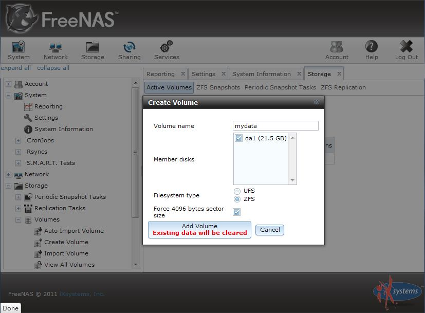
▲ 圖1：建立 ZFS 檔案系統的掛載點
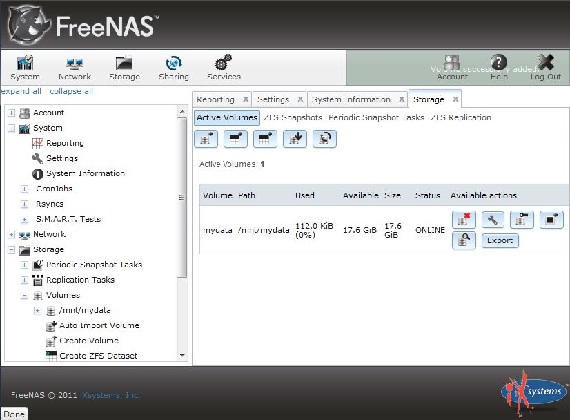
▲ 圖2：ZFS 檔案系統資訊
依照歷史篇中 FreeNAS 的官方建議，若系統為 32 位元版本，建立檔案系統時應建立 UFS 以取得較佳的效能，但為何此次採用 32 位元版本卻又建立 ZFS 呢？因為 8.0.1 BETA3 版本於建立 UFS 分割區時會出現錯誤（在 8.0 Release 版本則無此錯誤）如圖３ 所示，因此本次實作選擇建立 ZFS 掛載點。不過這個問題未來將會修復，畢竟目前還是 BETA 版本。
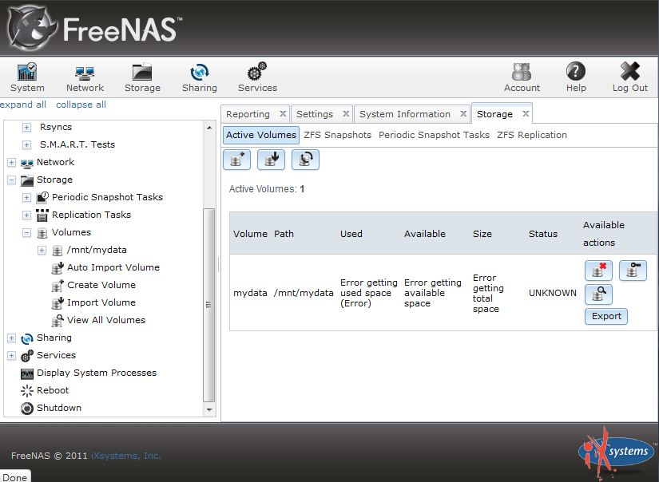
▲ 圖3：在 FreeNAS 8.0.1 BETA3 建立 UFS 檔案，系統發生錯誤
開啟記錄檔即時顯示功能
讀者在操作介面上選【System】項目後選【Settings】頁籤，接著在【Advanced】子項目中，選擇「Show console messages in the footer (Requires UI reload)」，最後按下〔OK〕即可。此時可以重新整理瀏覽器畫面 (Ctrl + F5)，如圖5 所示，會發現圖形介面下方出現三行記錄檔內容，讀者也可將滑鼠游標移到訊息區塊並點選左鍵，就能夠進一步看到詳細訊息。
若在升級過程中觀察系統訊息 (/var/log/message)，會發現圖形化升級會切換至路徑「/usr/local/www/freenasUI」並執行「python manage.py migrate」指令。
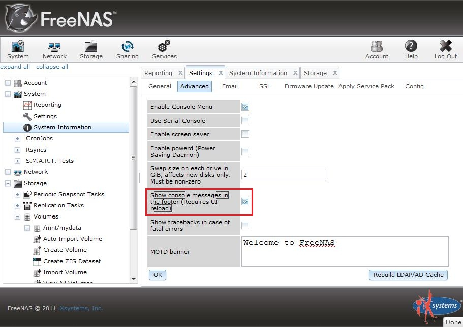
▲ 圖4：開啟 FreeNAS 即時顯示記錄檔訊息功能
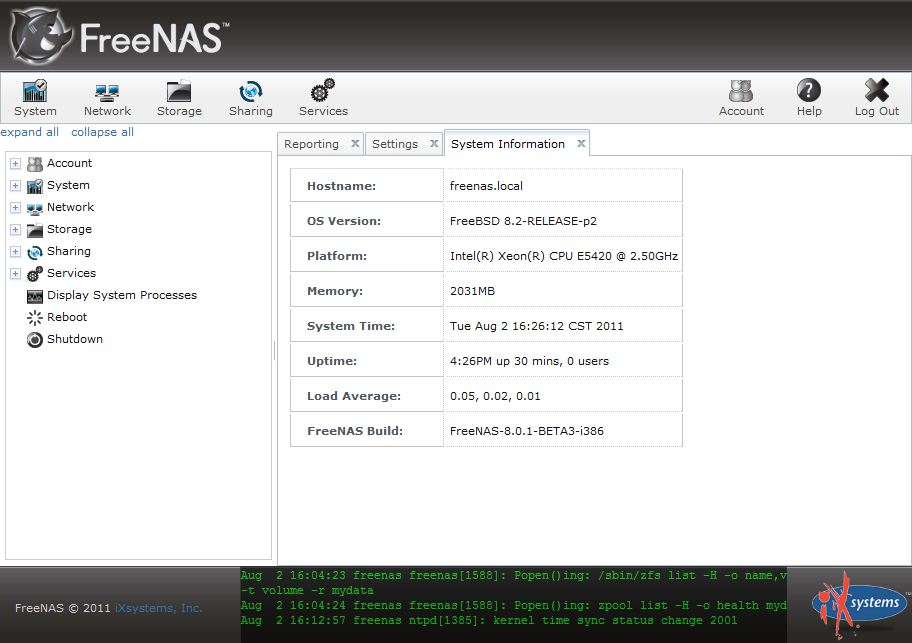
▲ 圖5：管理介面顯示記錄檔訊息畫面
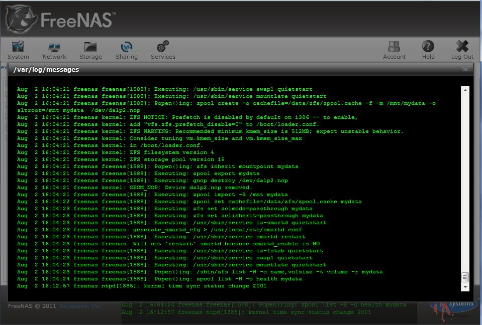
▲ 圖6：記錄檔區塊詳細訊息
選擇上傳韌體檔案暫存區
確認前一步驟已完成上傳新版韌體，接下來請選【System】後選【Settings】頁籤，接著進入【Firmware Update】子項目。由於先前只建立一個掛載點，因此韌體檔案會指定在先前建立的 /mnt/mydata。如果先前建立多個掛載點，則可以透過下拉選單功能進行選擇。最後按下〔OK〕後進入下個階段。
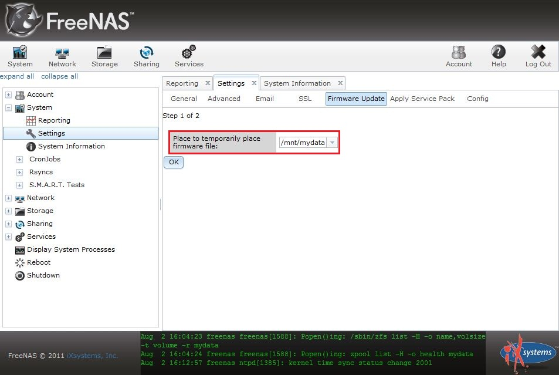
▲ 圖7：選擇韌體檔案掛載點
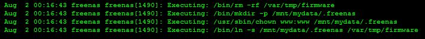
▲ 圖8：韌體檔案升級前的系統訊息
選擇韌體檔案並填入 SHA256 雜湊值
按下【瀏覽】鍵後，選擇先前從 FreeNAS 官網下載的 FreeNAS-8.0.1-BETA4-i386-GUI_Upgrade.xz 韌體檔案，並在「SHA256 sum for the image:」欄位填上對應的 SHA-256 雜湊值。本例為 「aa2b8d689df8c72bff0f12b0cb1b694219c2874713dadb916db151c3aa9d5540」。SHA-256 雜湊值可於該版本的 ReleaseNotes 檔案中找到，如本例於 ReleaseNotes-8.0.1-BETA4.txt ( https://sourceforge.net/projects/freenas/files/FreeNAS-8.0.1/ReleaseNotes-8.0.1-BETA4.txt/download )。按下〔OK〕鍵後，系統開始執行版本升級作業，當升級作業完成後會自動重啟 FreeNAS 主機以進行升級。
完成後我們登入 FreeNAS 管理介面，選【System】項目後選擇【System Information】，可確認版本是否升級成功。
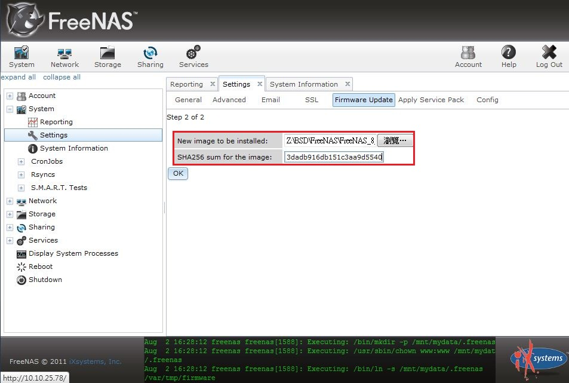
▲ 圖9：選擇韌體檔案與填入 SHA256 雜湊值
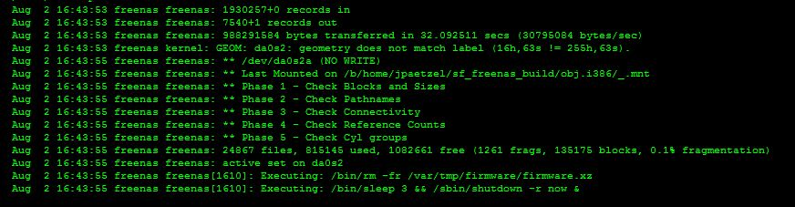
▲ 圖10：升級時顯示的系統訊息
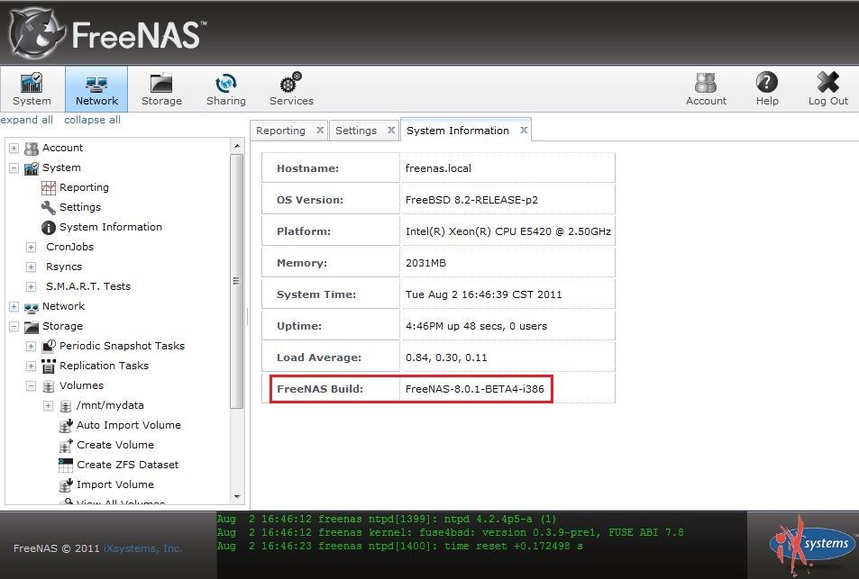
▲ 圖11：升級完成後的畫面
待續
本文介紹另一種升級方式，讀者可依據需求選擇更新 FreeNAS 的方式。下一篇文章將介紹如何將 FreeNAS 安裝到 USB/CF 儲存裝置上。您也許有興趣閱讀以下文章:
- 利用 FreeNAS 打造儲存設備 (8)──網路設定篇之頻寬合併 - 2012-01-13
- 利用 FreeNAS 打造儲存設備 (7)─Failover（故障轉移） - 2011-11-28
- 利用 FreeNAS 打造儲存設備 (6) 網路設定篇─基礎設定 - 2011-10-14
- 利用 FreeNAS 打造儲存設備(5)安裝篇（嵌入式 USB） - 2011-10-04
- 利用 FreeNAS 打造儲存設備(3)─安裝篇（由光碟升級） - 2011-09-01
- 利用 FreeNAS 打造儲存設備(2)－安裝篇 - 2011-08-18
- 利用 FreeNAS 打造儲存設備(1)－歷史篇 - 2011-08-03
自由軟體鑄造場電子報 : 第 181 期 基於 KVM 與 libvirt 的虛擬化叢集系統－Debian 篇
標籤: FreeNAS, nas, network-attached storage, GUI install,
分類: 技術專欄